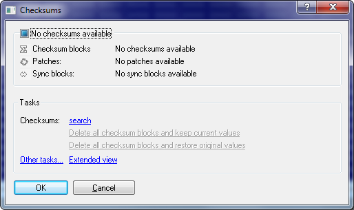
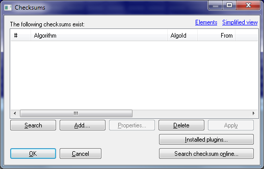
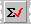

|
The dialog Checksums (Menu Edit) |

  
|
|
The dialog Checksums (Menu Edit) |
|
Use this dialog to manage the checksums which were found for this project. A checksum always consists of an area which is checked, an address where the checksum is stored and parameters which determine how the checksums calculates its results. A project can contain any number of checksums. For many cars there are checksum modules available which automatically recognize and correct the checksums.
For this dialog a simple and an extended view is available.
Simple view:

This dialog shows the current checksum status. Use the hyperlink "Search" to search for a checksum for your current project. All checksum plugins automatically recognize whether they can handle the current file.
Extended view:

Use the button ‘Search’ to search automatically for all kinds of known checksums. Additional modules are available for WinOLS which complement the main program. If you click on ’Search checksum online’ WinOLS will check online if there is a checksum module available for your current project.
Using the button ‘description’ you can edit the parameters of the selected checksum. Use the button ‘apply’ to apply the selected checksum immediately.
Automatic checksums:
Several checksum modules are available for WinOLS to correct the typical cars. In order to have them work properly it is absolutely necessary to use the unmodified original of the car as a project original. Is this isn't the case, the checksum blocks won't always be calculated correctly or won't be found at all
Manual checksums:
Pros may not only use automatically recognized checksums, but also add (Button add) or change (Button edit) checksums manually. For details about manual checksums please refer to the respective dialog.
Sync Blocks:
Click on the small black triangle next "Add" to add a Sync Block. It allows you to keep two identical data range identical. If one of the two ranges is changed, the other one will be changed, too.
Patches:
Some automatic checksums insert patches to correct the ECU. If you don't have an automatic checksum, you can manually add a manual patch-tagblock at an empty area to define the place where WinOLS can store the tag information (see dialog "Properties: Project").
Note:
You can get an overview of the modules you have installed / licensed with a click on the button ‘Installed Plugins‘ (or with the function ‘? > Info about plug-ins’)
Note about addresses:
The addresses in this dialog do not refer to the current element, but to the addresses like they are visible in the view <All elements>. This makes actions possible which apply to the data of multiple elements at once.
Shortcuts:
Symbol bar: 
Keyboard: F2 / c